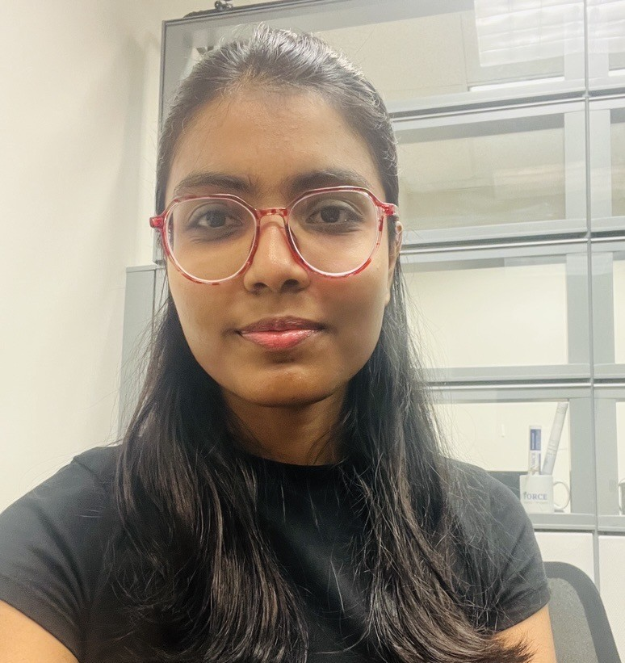
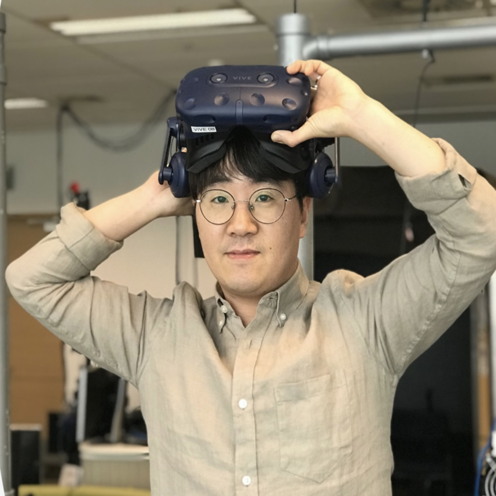

Arpita Paul
Empathic VR classroom

Assistant Professor · Lab Director
I am an Assistant Professor of Computer Game Design and Development at Kennesaw State University. I completed my Ph.D. in Computer Science at the University of Central Florida in 2018 and was a postdoctoral fellow researcher at the Human Interface Technology Lab (HIT Lab) in New Zealand from 2018 to 2021. My research interests lie in Extended Reality (VR/MR/AR) and data-driven Empathic Computing from a human-computer interaction perspective. I investigate personalized immersive experiences for education, learning, collaboration, simulation, game design, healthcare, and other human-centered applications.

Empathic VR classroom
Neural Interface
VIP: Interlligence Virtual Human
Interventions in VR Lectures on Learning
Virtual Avatar Gestures in VR